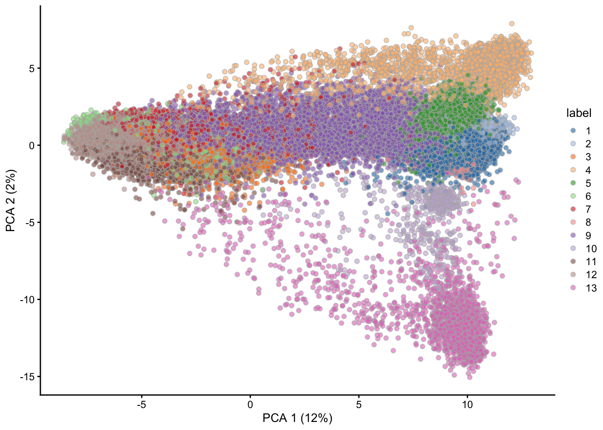

Chapter 3 Using an existing workspace
In this section we learn about
- Working with Jupyter notebooks
- Installing and loading R / Bioconductor packages
- Using the OSCA book to perform single-cell data
Packages used
- scRNAseq – Pre-defined single cell data sets
- scater – Single-cell quality control and normalization
- scran – Feature selection, dimensionality reduction, clustering, and visualization
3.1 Orchestrating single cell analysis
We tackle the ‘quick start’ section of the book ‘Orchestrating single cell analysis in R / Bioconductor’ (OSCA).
Visit Quick start, section 5.5, of OSCA.
3.2 Install and load R packages
We will use several R / Bioconductor packages and their dependencies. Make sure that the packages are installed in R by running the following command. Package installation can take quite a long time; this is an area that is being actively worked on.
## packages <- c("scRNAseq", "scater", "scran", "uwot")
## need <- packages[!packages %in% rownames(installed.packages())]
## BiocManager::install(need, update = FALSE)Detailed information on R / Bioconductor packages can be found on the package ‘landing pages’, e.g., for scater. Be sure to check out the vignettes available on the landing page.
Attach the packages we will use into the current R session. Attaching a package adds the functions and other objects defined in the package to the R ‘search’ path, so that the commands can be evaluated.
3.3 Example data as a SingleCellExperiment
We’ll work with a pre-defined SingleCellExperiment data set; see the
OSCA book for steps to create your own SingleCellExperiment. Check
out the help page ?MacoskoRetinaData for more information on this
data set.
## snapshotDate(): 2020-04-27## see ?scRNAseq and browseVignettes('scRNAseq') for documentation## loading from cache## see ?scRNAseq and browseVignettes('scRNAseq') for documentation## loading from cache## class: SingleCellExperiment
## dim: 24658 49300
## metadata(0):
## assays(1): counts
## rownames(24658): KITL TMTC3 ... 1110059M19RIK GM20861
## rowData names(0):
## colnames(49300): r1_GGCCGCAGTCCG r1_CTTGTGCGGGAA ... p1_TAACGCGCTCCT
## p1_ATTCTTGTTCTT
## colData names(2): cell.id cluster
## reducedDimNames(0):
## altExpNames(0):Printing sce shows dim: 24658 49300, indicating that there are
24658 rows (genes) and 49300 columns (cells). colData names(2): cell.id cluster indicates that each column (cell) has additional
information on cell id and cluster, perhaps from a previous analysis.
The count data (number of reads from each cell mapping to each gene)
can be extracted from sce using assay(); this is a a 24658 x 49300
matrix, so we subset it to show only the first 10 rows and 3
columns. Many of the counts in typical single cell experiments are
zeros, so the matrix is represented using a sparse matrix
representation defined in the base R Matrix package.
## 10 x 3 sparse Matrix of class "dgCMatrix"
## r1_GGCCGCAGTCCG r1_CTTGTGCGGGAA r1_GCGCAACTGCTC
## KITL . . 1
## TMTC3 3 . .
## CEP290 1 3 .
## 4930430F08RIK 2 1 2
## 1700017N19RIK . . .
## MGAT4C . . 4
## RASSF9 . . .
## LRRIQ1 . . .
## ADGB . . .
## SLC6A15 4 1 33.4 The ‘Quick start’ workflow
Use the functions perCellQCMetrics() and quickPerCellQC() to
identify cells failing to satisfy quality control metrics. Details of
these functions can be found in the OSCA book, on the help
pages ?perCellQCMetrics, and in package vignettes.
is.mito <- grepl("^MT-", rownames(sce))
qcstats <- perCellQCMetrics(sce, subsets=list(Mito=is.mito))
filtered <- quickPerCellQC(qcstats, percent_subsets="subsets_Mito_percent")
sce <- sce[, !filtered$discard]The number of cells has been reduced from 49300 to 45877.
## [1] 24658 45877Normalization transforms counts to accommodate differences in ‘library
size’ (total number of reads assayed in each cell) and the
distribution of the counts. There are several approaches to
normalization; we adopt the approach implemented by the
logNormCounts() function. This updates sce to include a second
assay, called "logcounts".
## 10 x 3 sparse Matrix of class "dgCMatrix"
## r1_GGCCGCAGTCCG r1_CTTGTGCGGGAA r1_GCGCAACTGCTC
## KITL . . 0.0670073
## TMTC3 0.14677618 . .
## CEP290 0.05060284 0.17027364 .
## 4930430F08RIK 0.09949075 0.05901921 0.1310400
## 1700017N19RIK . . .
## MGAT4C . . 0.2511625
## RASSF9 . . .
## LRRIQ1 . . .
## ADGB . . .
## SLC6A15 0.19256085 0.05901921 0.1923511Feature selection identifies genes that are particularly informative
about between-cell variation in gene expression. The functions
modelGeneVar() and getTopHVGs() identify 9two14 particularly
informative features.
## [1] "RHO" "CALM1" "MEG3" "GNGT1" "SAG" "RPGRIP1"## [1] 914Each column of the assay matrix can be though of as a vector defining
the location of a cell in a high-dimensional space. Dimensionality
reduction projects this high dimensional space onto lower dimensions
to enhance visualization. The following commands perform ‘PCA’ and
‘UMAP’ dimensionality reduction. The sce object is updated to record
these reductions, so the calculation can be performed only once. It
takes 2 or 3 minutes to evaluate the following cell.
set.seed(1234)
system.time({
sce <- runPCA(sce, ncomponents=25, subset_row=hvg)
sce <- runUMAP(sce, dimred = 'PCA', external_neighbors=TRUE)
})## user system elapsed
## 152.906 4.526 157.439## [1] "PCA" "UMAP"PCA and UMP can be used to visualize cells in two or three
dimensions. The cells form visual clusters, and cluster_louvain() is
a method to identify cells that are close to one another in the
reduced space.
g <- buildSNNGraph(sce, use.dimred = 'PCA')
colLabels(sce) <- factor(igraph::cluster_louvain(g)$membership)As a final step in this quick start, cells can be visualized in reduced dimensional space, colored according to the identified clusters.

3.5 Information about the packages used in this session
The R command sessionInfo() captures information about the
versions of software used in the current session. This can be valuable
for performing reproducible analysis.
## R version 4.0.2 Patched (2020-06-24 r78747)
## Platform: x86_64-apple-darwin17.7.0 (64-bit)
## Running under: macOS High Sierra 10.13.6
##
## Matrix products: default
## BLAS: /Users/ma38727/bin/R-4-0-branch/lib/libRblas.dylib
## LAPACK: /Users/ma38727/bin/R-4-0-branch/lib/libRlapack.dylib
##
## locale:
## [1] en_US.UTF-8/en_US.UTF-8/en_US.UTF-8/C/en_US.UTF-8/en_US.UTF-8
##
## attached base packages:
## [1] parallel stats4 stats graphics grDevices utils datasets
## [8] methods base
##
## other attached packages:
## [1] scran_1.16.0 scater_1.16.2
## [3] ggplot2_3.3.2 scRNAseq_2.2.0
## [5] SingleCellExperiment_1.10.1 SummarizedExperiment_1.18.2
## [7] DelayedArray_0.14.1 matrixStats_0.56.0
## [9] Biobase_2.48.0 GenomicRanges_1.40.0
## [11] GenomeInfoDb_1.24.2 IRanges_2.22.2
## [13] S4Vectors_0.26.1 BiocGenerics_0.34.0
##
## loaded via a namespace (and not attached):
## [1] bitops_1.0-6 bit64_0.9-7.1
## [3] httr_1.4.1 tools_4.0.2
## [5] R6_2.4.1 irlba_2.3.3
## [7] vipor_0.4.5 DBI_1.1.0
## [9] colorspace_1.4-1 withr_2.2.0
## [11] tidyselect_1.1.0 gridExtra_2.3
## [13] bit_1.1-15.2 curl_4.3
## [15] compiler_4.0.2 BiocNeighbors_1.6.0
## [17] labeling_0.3 bookdown_0.20
## [19] scales_1.1.1 rappdirs_0.3.1
## [21] stringr_1.4.0 digest_0.6.25
## [23] rmarkdown_2.3 XVector_0.28.0
## [25] pkgconfig_2.0.3 htmltools_0.5.0
## [27] dbplyr_1.4.4 fastmap_1.0.1
## [29] limma_3.44.3 rlang_0.4.7
## [31] rstudioapi_0.11 RSQLite_2.2.0
## [33] shiny_1.5.0 DelayedMatrixStats_1.10.1
## [35] farver_2.0.3 generics_0.0.2
## [37] BiocParallel_1.22.0 dplyr_1.0.0
## [39] RCurl_1.98-1.2 magrittr_1.5
## [41] BiocSingular_1.4.0 GenomeInfoDbData_1.2.3
## [43] Matrix_1.2-18 Rcpp_1.0.5
## [45] ggbeeswarm_0.6.0 munsell_0.5.0
## [47] viridis_0.5.1 lifecycle_0.2.0
## [49] stringi_1.4.6 yaml_2.2.1
## [51] edgeR_3.30.3 zlibbioc_1.34.0
## [53] BiocFileCache_1.12.0 AnnotationHub_2.20.0
## [55] grid_4.0.2 blob_1.2.1
## [57] promises_1.1.1 dqrng_0.2.1
## [59] ExperimentHub_1.14.0 crayon_1.3.4
## [61] lattice_0.20-41 cowplot_1.0.0
## [63] locfit_1.5-9.4 knitr_1.29
## [65] pillar_1.4.6 igraph_1.2.5
## [67] glue_1.4.1 BiocVersion_3.11.1
## [69] evaluate_0.14 BiocManager_1.30.10
## [71] vctrs_0.3.2 httpuv_1.5.4
## [73] gtable_0.3.0 purrr_0.3.4
## [75] assertthat_0.2.1 xfun_0.15
## [77] rsvd_1.0.3 mime_0.9
## [79] xtable_1.8-4 later_1.1.0.1
## [81] viridisLite_0.3.0 tibble_3.0.3
## [83] AnnotationDbi_1.50.1 beeswarm_0.2.3
## [85] memoise_1.1.0 statmod_1.4.34
## [87] ellipsis_0.3.1 interactiveDisplayBase_1.26.3